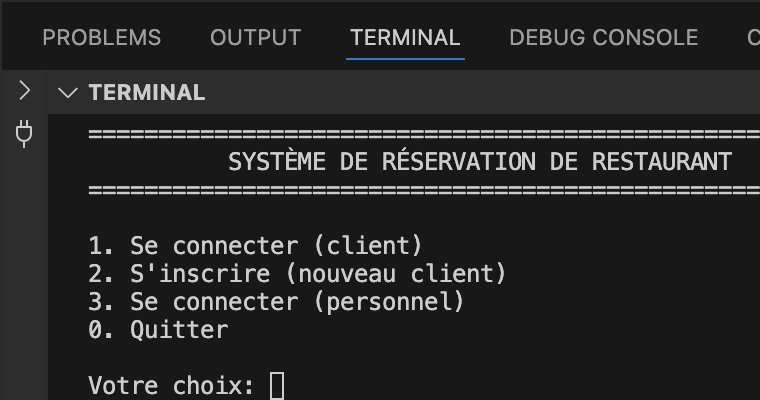
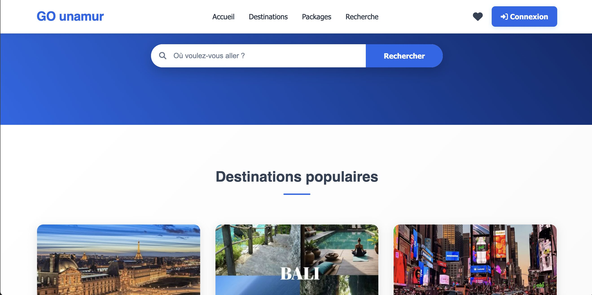
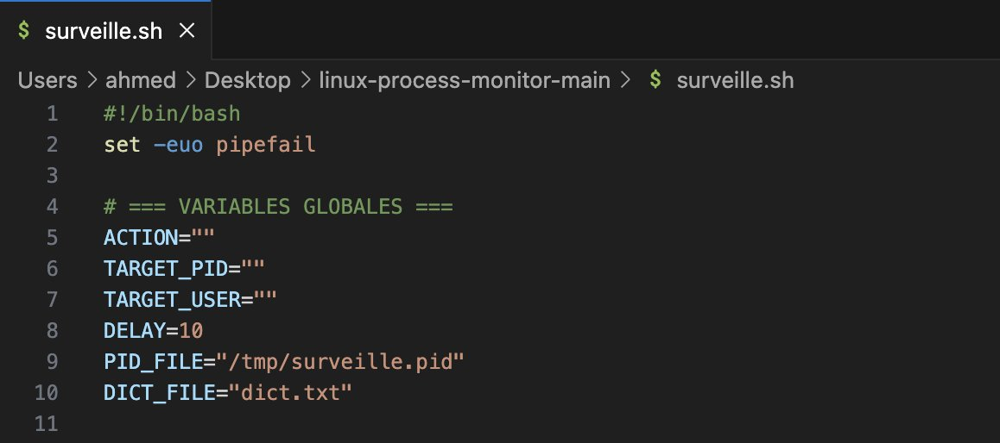
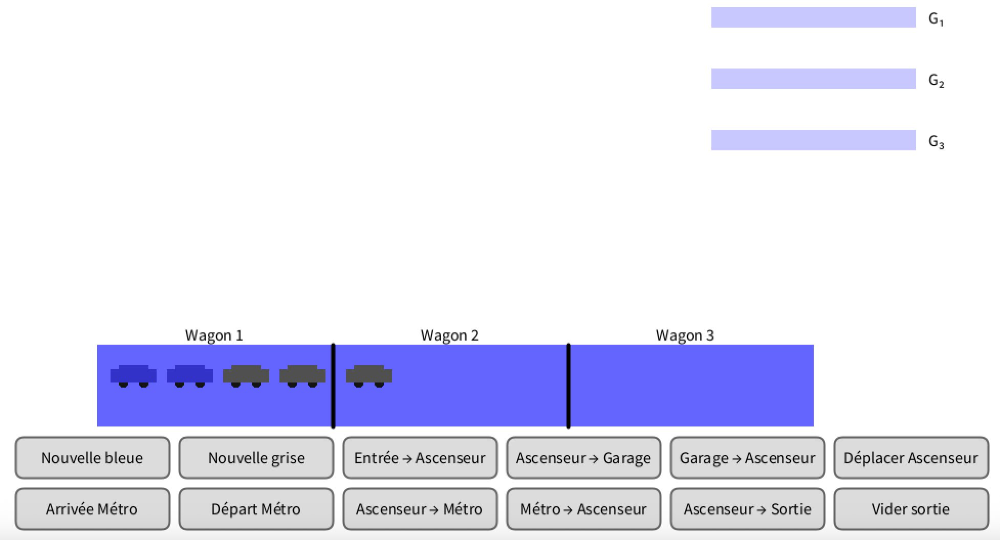
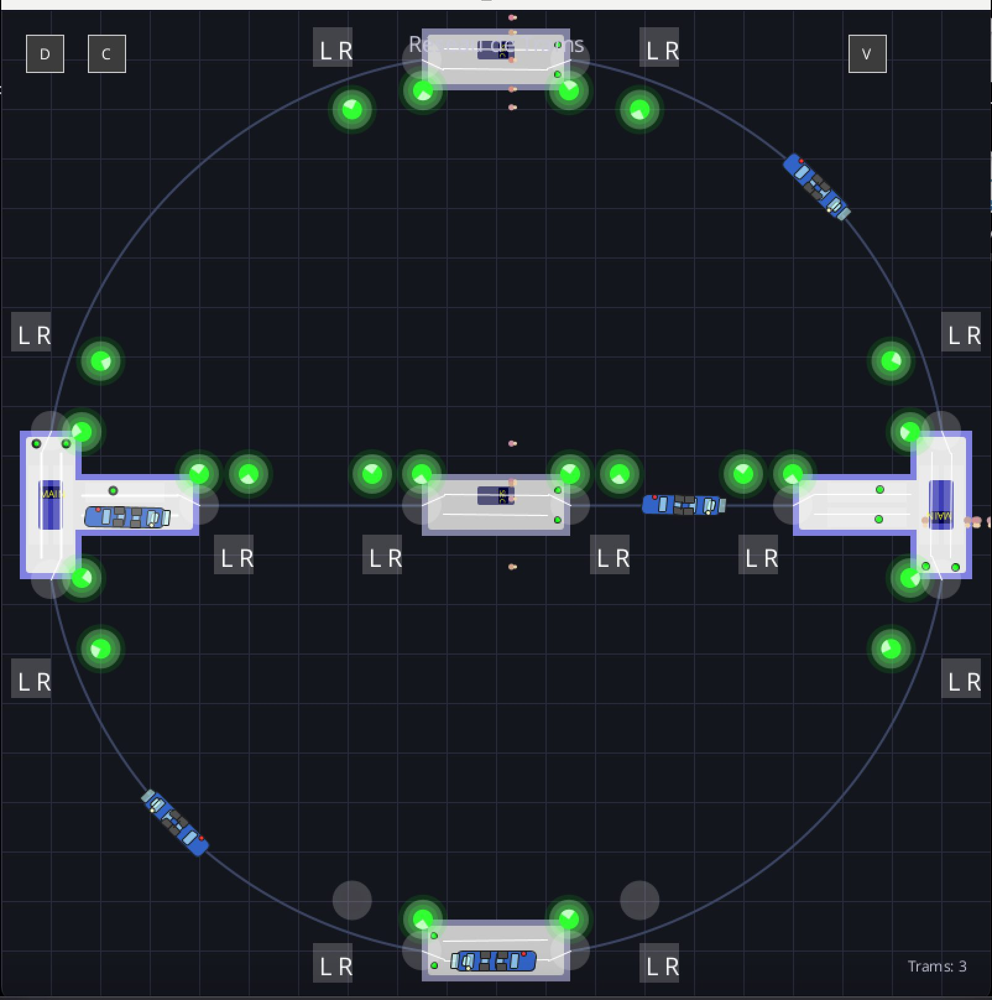

Développement & Programmation
Python, C, Java (POO), HTML/CSS/JS et FastAPI. Conception et gestion de bases de données relationnelles et NoSQL.
PythonCJavaFastAPIMySQLNoSQL
Portfolio — recherche de stage
Étudiant en Réseau & Système.
Profil
Étudiant en Réseau & Système, je recherche un stage pour mettre en pratique mes connaissances en administration système et en sécurité réseau. Curieux et méthodique, j'aime comprendre comment les systèmes fonctionnent en profondeur — d'un paquet réseau capturé sous Wireshark jusqu'à une API que je déploie moi-même. Je cherche aujourd'hui un terrain concret pour renforcer ces compétences aux côtés d'une équipe.
Compétences
Python, C, Java (POO), HTML/CSS/JS et FastAPI. Conception et gestion de bases de données relationnelles et NoSQL.
Gestion de serveurs sous Linux et Kali Linux, administration à distance, analyse de protocoles et audit réseau.
Gestion des certificats et chiffrement des données, mécanismes d'authentification et sécurisation des échanges.
Algorithmique, structures de données, vérification et calculabilité — les bases de chaque système que je construis.
Projets

Conception complète d'une base PostgreSQL (MCD/MLD) pour un restaurant, avec scripts Python pour automatiser réservations, commandes et rapports.

Site de réservation de voyages avec architecture backend structurée, middlewares de sécurité, authentification JWT et API RESTful.

Administration d'un réseau local hétérogène sous Linux, avec supervision des services (type Nagios) et serveurs virtualisés sous VMware.
Gestion Active Directory (droits, groupes), configuration réseau (IIS, adressage IP) et procédures de sauvegarde sous Windows Server.

Simulation Processing d'un système multi-postes (entrée, ascenseur, garages, métro) avec gestion des capacités, des priorités et rendu procédural des véhicules.

Réseau de trams (5 stations, aiguillages, signalisation) avec dispatching central anti-collision et conception orientée objet (classes abstraites, pattern Command).
Formation
Langues
Contact
Disponible pour un stage.